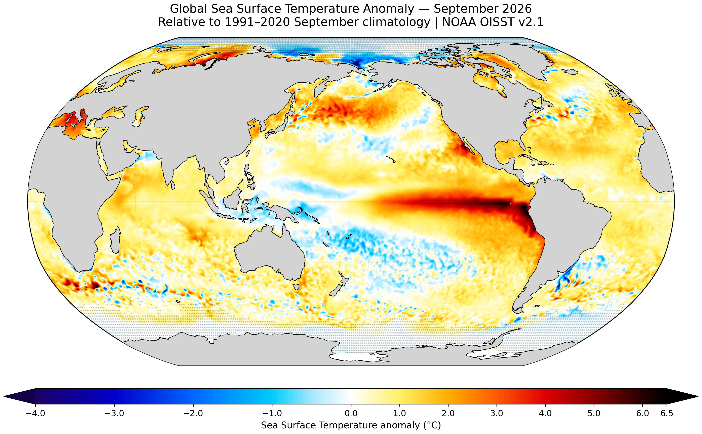

September 2026 at a glance
The SST anomaly is calculated as the difference between September 2026 sea surface temperature and the corresponding 1991–2020 September climatology at each grid cell.
Global SST anomaly map
A Robinson projection provides a compact global view of the spatial anomaly pattern. The colour scale is centred at 0 °C and visually spans −4 to +6.5 °C.

Explore the anomaly field in 3D
Rotate the globe, zoom in and move the cursor across the ocean to inspect local SST anomalies. The visualization uses the original 0.25° OISST grid.
Drag to rotate · Scroll to zoom · Hover over the ocean to inspect the local anomaly.
From NOAA data to anomaly field
September 2026
Monthly sea surface temperature for September 2026 was extracted from NOAA OISST v2.1 on its native 0.25° × 0.25° grid.
1991–2020 climatology
The NOAA 1991–2020 September long-term monthly mean was used as the reference climatology for each grid cell.
SST anomaly
The anomaly was calculated grid cell by grid cell as September 2026 SST minus the corresponding September climatological SST.
Polar regions
Sea-ice concentration was used to identify polar cells affected by ice. A grid cell was considered sea-ice influenced when the concentration reached at least 15% either in September 2026 or in the corresponding 1991–2020 September climatology.
Data source and workflow
Dataset: NOAA Optimum Interpolation Sea Surface Temperature (OISST) v2.1.
Target period: September 2026.
Reference period: September climatology, 1991–2020.
Spatial resolution: 0.25° × 0.25°.
Processing: Python, NumPy and xarray.
Visualization: Matplotlib, Cartopy and Three.js.